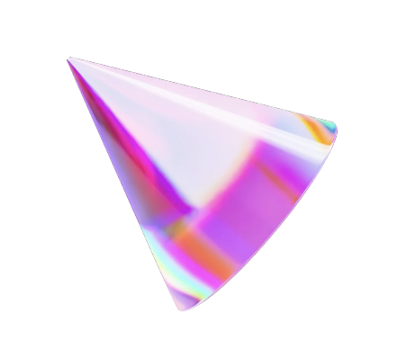
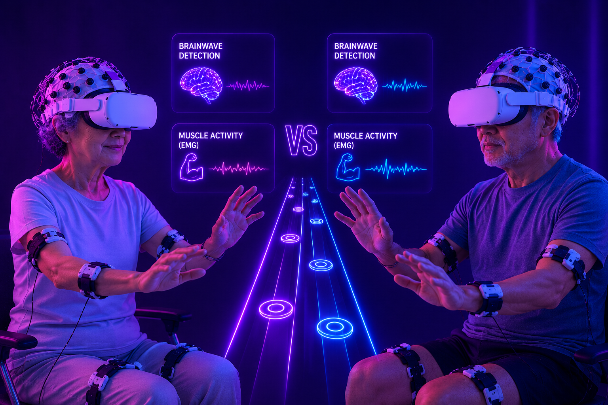
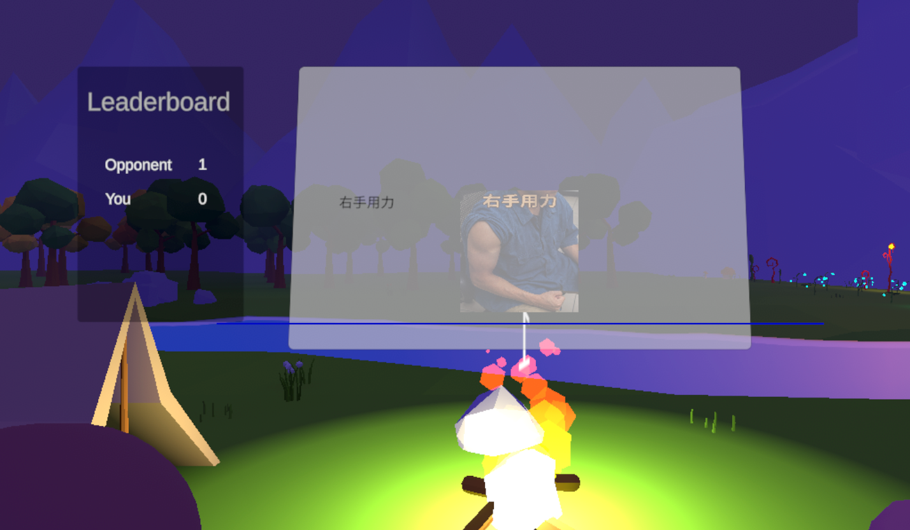
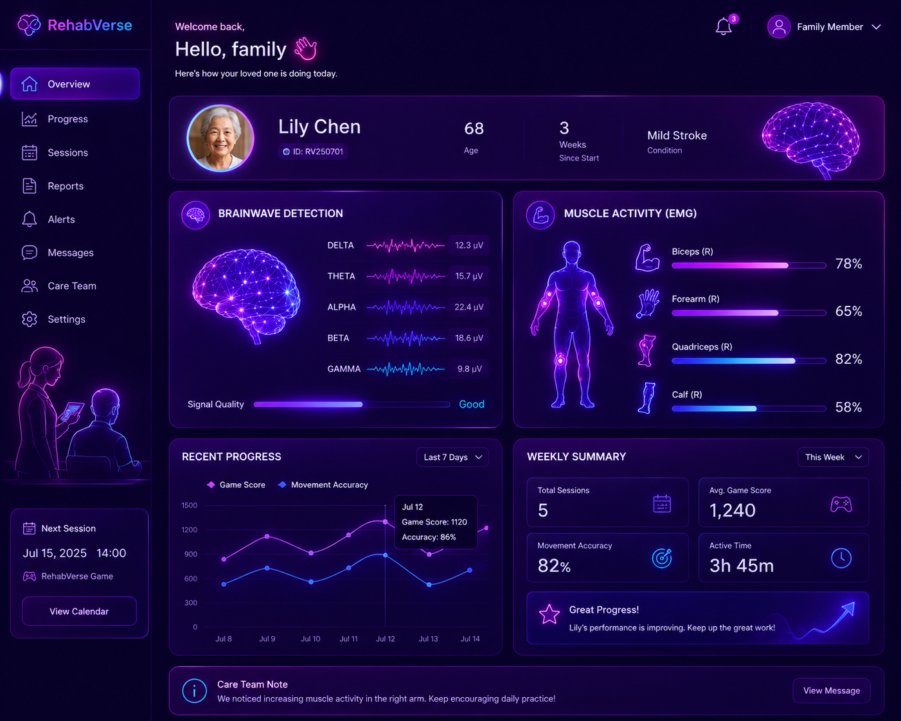
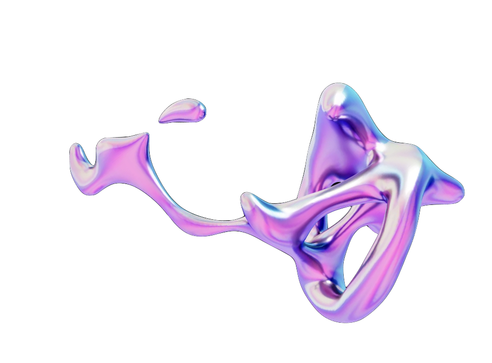
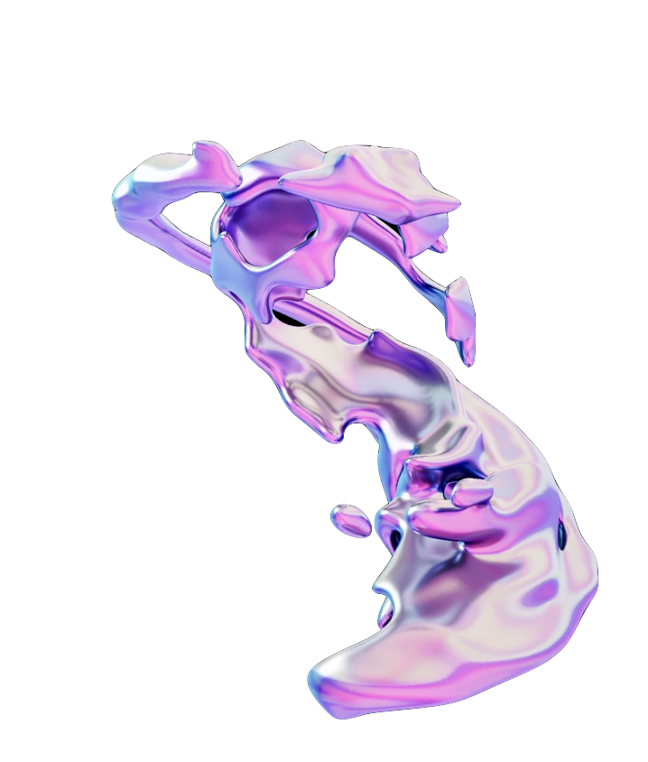
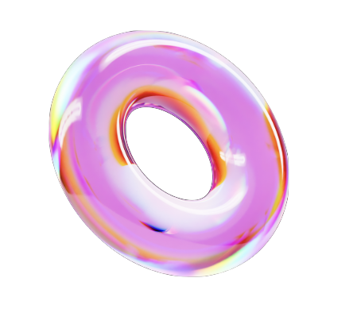
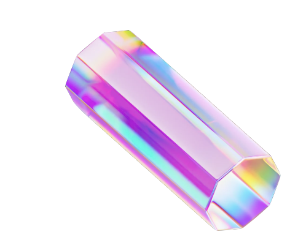
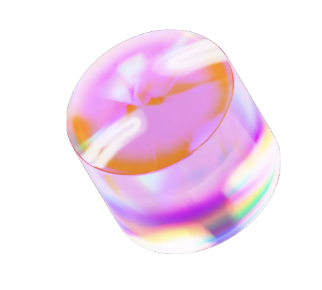

硬體選項一沿用現有設備
可直接使用一般醫療院所的腦電與肌電設備，也可參考型號購置 BioSemi 硬體。
從產品本體、遊戲化情境到追蹤回饋，RehabVerse 完整呈現一套沉浸式復健系統。




復健過程枯燥，患者的復健意願因此下降，這是復健醫療現場最真實的問題。
患者缺乏動機，難以維持長期規律訓練，恢復進度也因此受影響。
工作繁忙難以親自陪同，對復健進度也無從掌握。
需要花費額外心力督促與紀錄，人力成本因此提高。
RehabVerse 透過 BCI 與肌電技術偵測患者的復健過程， 把每次動作的出力程度量化，並將復健歷程遊戲化。 再以演算法建立一起復健的機器人夥伴， 驅動實體設備與情境回饋，幫助患者提升復健意願與成效。

RehabVerse 能為患者、家屬與醫護帶來的實際功能，讓每一次復健都更有動力。
偵測復健用力程度，量化為遊戲情境得分，並即時提供情緒支持與鼓勵。
以其他患者作為陪伴與競爭對手，一起復健，讓整個過程更有動力。
以演算法設計陪伴復健的機器人，透過得分操縱策略，激勵患者的復健意願。
透過瀏覽器登入帳號與 App，追蹤患者每次的復健成效與進度。
從生理訊號擷取、特徵萃取到決策控制，構成端到端（end-to-end）的即時運作管線。
只要接上醫療院所現有的腦電與肌電設備，RehabVerse 就能即時讀取患者的動作與出力， 轉換成遊戲中的表現與回饋，並自動把復健成效上傳雲端，讓醫護與家屬隨時掌握進度。
相容於醫療院所既有硬體，軟硬整合、即插即用的技術規格。
無論是沿用現有設備或搭配我們的軟硬體服務，RehabVerse 都能輕鬆導入你的復健場景。

硬體選項一可直接使用一般醫療院所的腦電與肌電設備，也可參考型號購置 BioSemi 硬體。

硬體選項二想要升級體驗，也能選擇我們提供的硬體設備租賃方案，彈性又省心。

患者端軟體以雲端服務提供患者端的復健遊戲與機器人陪伴，隨開即用、持續更新。

追蹤端軟體透過雲端服務即時查看復健成效，讓醫護與家屬隨時掌握每一步進度。